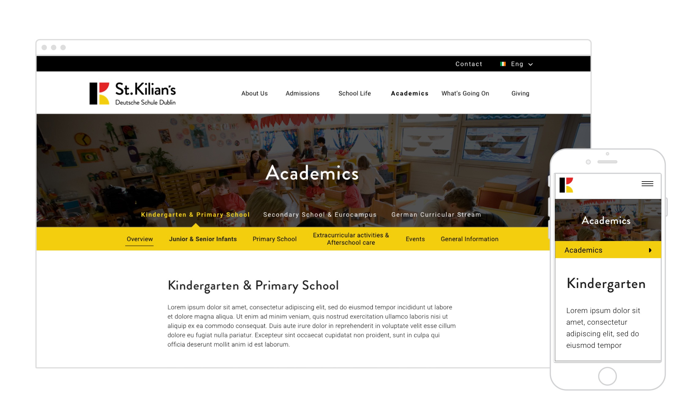

St. Kilian’s is a co-educational German/Irish school with a European culture and spirit. I was approached by the school to redesign and develop their website to incorporate their new brand identity.
One aim of the redesign was to entice new students to enroll, however more importantly it was to inform visitors on the aims,ethos and benefits of the school, celebrate students achievements, circulate school news and displays photos of ongoing events in and outside of the school/classroom.
view the website →
The project involved redesigning the information architecture, creating user flows and user stories to brainstorm ways to engage parents, teachers and students alike, the development of a UI & visual style guide and providing art direction for photography. A large emphasis was also put on rejuvenating existing content for readability and seo purposes.

The finished project resulted in highlighting the school’s unique character and gives a colourful and lively representation of life at St. Kilian’s. Showing the school for the fun, active and social learning environment it truly is.